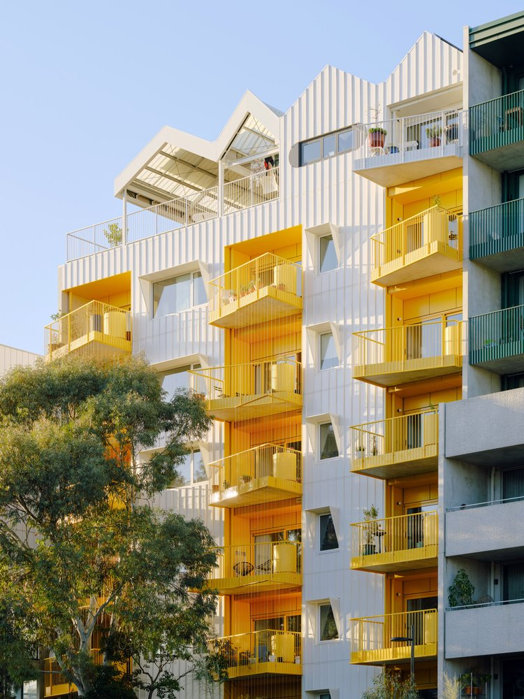
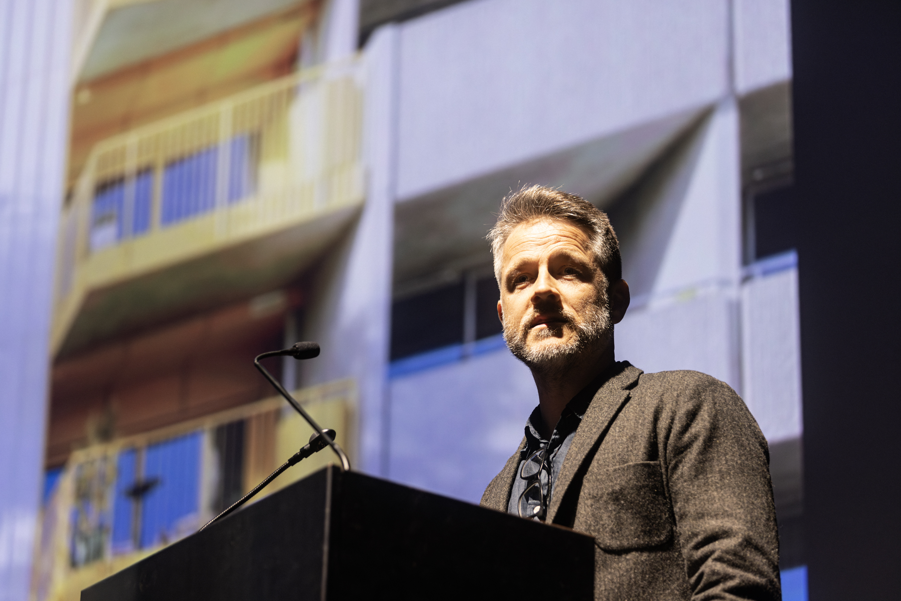
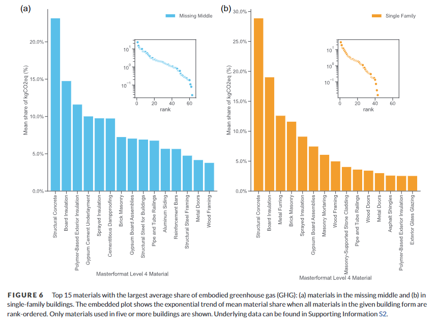
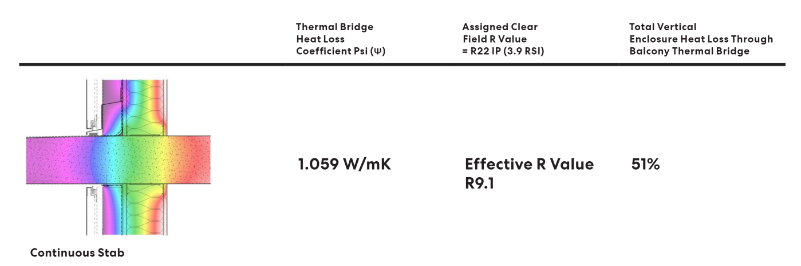
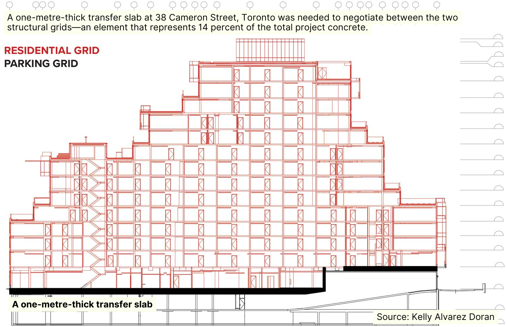
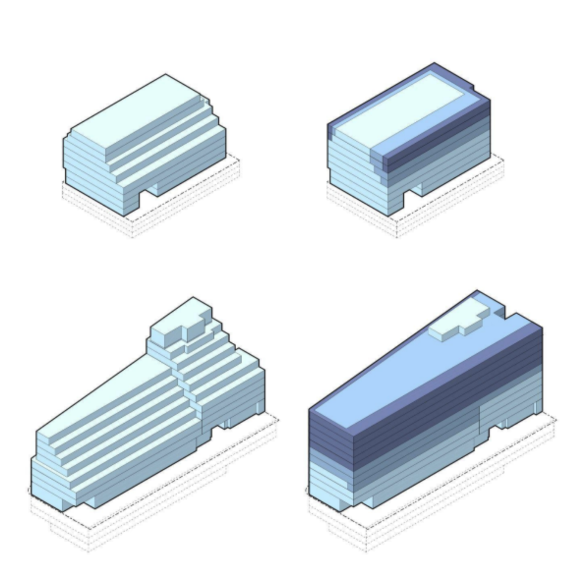

setbacks
From Paris…
…to London…
…to Tokyo.


And we didn’t forget how to build straight upward, either.
This is Austin Maynard’s ParkLife, part of Nightingale Village, built in 2022.
It’s one of the most iconic, well-loved, and sustainable new builds in Melbourne.
This is in no small part because of its consistent form: shooting straight up from the earth and toward the sky, it’s modern, striking, and environmentally friendly.
It was also extremely difficult to get planning approval to build.
“[ParkLife was] a product of war with the planning process… we wasted a lot of money, council wasted a lot of time—to end up where we started.”
– Andrew Maynard, Architect, at YIMBY Melbourne’s Unbanning Beauty
Most builds do not get as lucky as ParkLife, though.
Instead, they are subjected to an architectural form known as an ‘upper-level setback’, which is codified within planning controls across Melbourne.
This is not just a harmless piece of prescriptive design regulation: upper-level setbacks are terrible for both environmental sustainability and housing affordability.
They have almost no benefits, and are making our city worse.
In the context of dual climate and housing crises, it’s time we abolish unnecessary upper-level setbacks.



The case against upper-level setbacks
Upper-level setbacks:
- increase embodied carbon,
- increase operational carbon emissions,
- increase construction costs, and
- reduce housing supply.
We explore each of these issues in some detail below.
1. Upper-level setbacks increase embodied carbon
Researchers from the University of Toronto found that almost three quarters of the embodied carbon in a given build came from reinforced concrete, slabs, and drop panels.

“Design choices can yield large reductions in emissions,” write Rankin et al. in the Journal of Industrial Ecology.
In order to reduce embodied carbon, the researchers recommended the removal of setbacks.
Concrete slab volume, they write, “is a major driver of concrete emissions and could be reduced by building without [setbacks], which increase concrete load through large transfer slabs while reducing usable space.”
Also in Toronto, Half Climate Design developed alternate designs for two medium-density projects affected by upper-level setback controls.
The analysis demonstrated that the removal of setbacks would save between 10 and 17 kg of carbon per square metre built—even without moving to the more sustainable materials this alternative design would enable.
half img
In addition to all of the above, setbacks also increase a building’s surface area and exposure to the elements.
This necessitates more thermal treatment and waterproofing, which is resource intensive and increases lifetime inefficiency of the building.
Which leads nicely to our next point.
2. Upper-level setbacks increase operational carbon emissions
Because setbacks require the extension of uncovered continuous floor slabs, buildings lose thermal efficiency due to heat transfer through exposed areas and structural concrete lacking shade from overhead balconies.

This increases heating and cooling costs for the building throughout its lifetime, and increases electricity bills for occupants.
As a fun bonus, due to the temperature of continuous floor slabs, setbacks also increase the risk of mould and condensation inside apartments. Thank you planners, very cool!
3. Upper-level setbacks increase construction costs
Buildings with a traditional “boxy” shape are simpler—and cheaper—to build and maintain, while more complex built forms are the exact opposite.

Upper-level setback controls raise the per-dwelling costs, which are then passed on in the sell prices of apartments within a given project.
This reduces project viability, and throws up yet another barrier to the increased housing supply our city needs.
4. Upper-level setbacks reduce housing supply
Moreover, setback requirements force developments to deliver less floor space—and therefore less housing.
How this happens is obvious when you look at a building with setbacks—all that empty space could have been more homes where people want to live.
The Half Climate Design alternate designs found that case study projects would have delivered 20% to 70% more housing if setbacks weren’t enforced.

| With setbacks | No setbacks | |
| 1100 Kingston Road | 146 units | 254 units |
| 2803 Dundas Street West | 92 units | 113 units |
The additional yield would enable housing projects to deliver more bedrooms, more homes, and more housing diversity to neighbourhoods across our city.
But all this is precluded by the planning system’s harmful insistence on enforcing upper-level setbacks.
The question is—if upper-level setbacks are so obviously bad, then why are they such a prominent feature of anglospheric planning systems?
Well, beyond standard conservative planner arguments of “this is how we’ve done it for decades”, there are some arguments for upper-level setbacks.
They’re just not very good.
The (shaky) case for upper-level setbacks
Upper-level setbacks:
- Reduce wind tunnelling (but only on very tall buildings)
- Increase solar access (at the cost of shade and safety)
- Reduce ‘visual bulk’ (this is not a real thing)
Again, we explore each of these points briefly below.
Upper-level setbacks reduce wind tunnelling (on buildings well over 20 storeys)
Many advocates for the current setback regime argue that they play a vital role in preventing urban canyoning or wind tunnelling.
The thing is—most evidence around wind tunnelling focuses on buildings above 20 storeys tall. There is little evidence that wind tunnelling is a major issue at low heights like those within Victorian planning controls.
Where wind tunnelling is a concern, it can be adequately resolved without upper-level setbacks, through measures such as urban tree planting and the separation of buildings at the ground level.
Meanwhile, our city’s setback requirements sometimes start as low as 2 storeys, and apply to buildings well below 20 storeys total height.
Upper-level setbacks increase solar access (at the cost of shade and safety)
Another notable argument in favour of upper-level setbacks is to do with overshadowing and sunlight. Indeed, current controls aim to maximise the amount of sunlight that hits our streets.
This aim, however, is falling under greater scrutiny in a warming world, where urban heat is considered a great threat to public health.
In a city like Melbourne, infamous for its cloudy weather, should overshadowing be our main concern, given the high cost of setbacks, and the fact that for a majority of the year the sunlight is diffuse anyway?
Indeed, recessing all our buildings comes at a great cost, including forgoing the benefits of shade for pedestrians, all the while disconnecting residents from their broader streetscape and neighbourhood, cutting off their connection from others and completely nullifying the safety benefits of passive surveillance.
Upper-level setbacks reduce ‘visual bulk’ (this is not a real thing)
Let us be completely clear: visual bulk is not a real thing. It is a term invented by the planning system, and has no evidentiary basis to back it up.
And yet it is the governing reason our system requires upper-level setbacks.
The two concerns above—wind tunnelling and solar access—could both be confronted in large part through ground-level setbacks.
IMG
However, the planning system does not consider ground-level setbacks to be a substitute for upper-level setbacks.
If you set your building back at the ground level, you cannot just build straight upward. You then have to also implement an upper-level setback.
Why? Because of “visual bulk” which, again, we have to stress, is not a real thing.